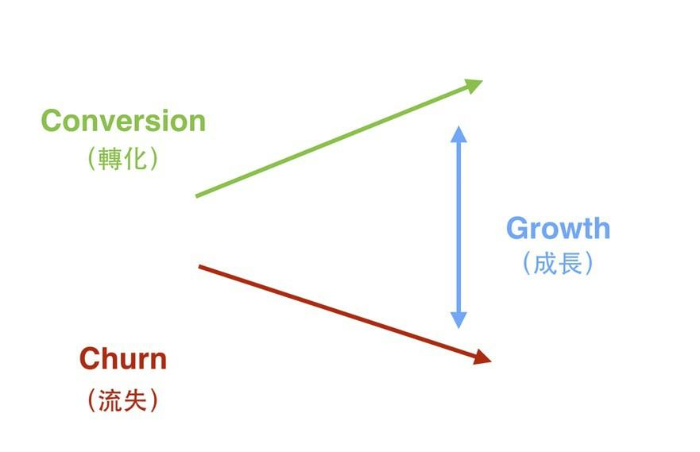
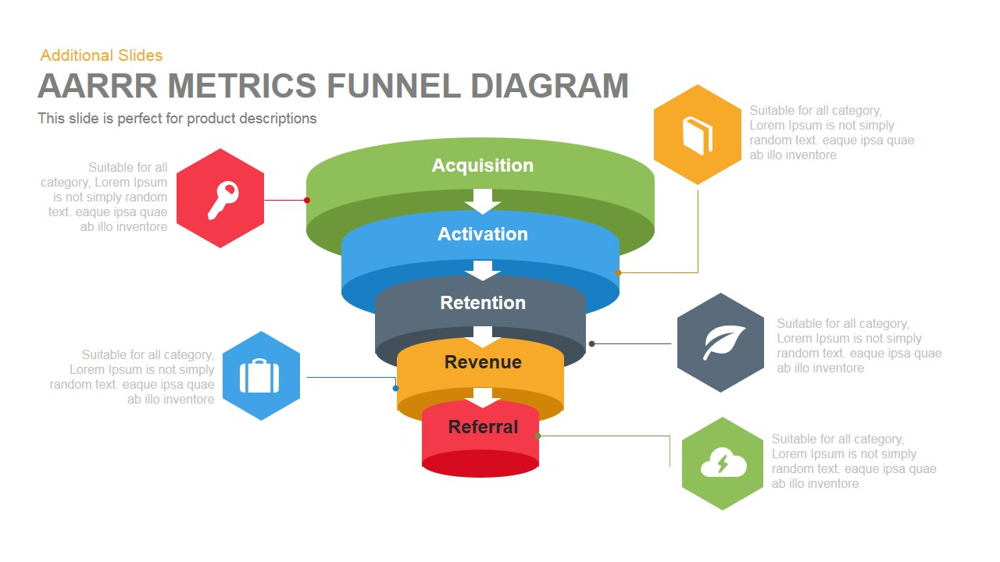
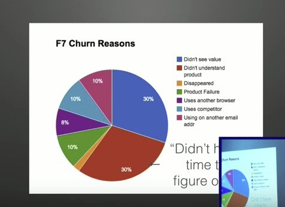

如何自學會一門學問
我們前面主要談了幾個主題：向老師學框架、從老師講授的內容自己整理重點。
但是生活中並沒有那麼多好老師，又或者是那些好老師，與你時間、地點永不重合，你這輩子沒機會上到他們的課。
又或者，這門學問技術太新，框架技術真實存在，但是可能到處散落在各領域。從各個來源（書、課程、文章）學習整理困難，感覺範圍無限大怎麼辦？
有沒有什麼高效的方法。事實上還真的有，我就是靠著這套自學框架拿下多門領域的。
英文裡的自學，實際上的英文詞不是 "Self-Learning"，而是 "Self-Taught"（自教）
這裡我要教會大家的就是一套「如何教會自己」的框架。
打造自己的「代數習題冊」
2015 年，我在台灣有一門課 "Intro to Growth Hack" 在非常火紅。Growth Hack 這個詞翻成中文，叫增長黑客。是一門在網上用各種技術工具實現業績增長的法門。因為這門課非常的新，當時在中文世界裡沒有太多材料，但又是一門大家趨之若鶩的技術。
2015 正值我當年從美國離職回台灣契機。技術圈朋友知道我在美國時有涉獵這門技術，希望作個分享。沒想到這個課堂就被擠爆了。
原本第一個版本是只針對技術圈朋友分享的。專有名詞很多。
後來在分享一兩場之後，有個朋友問我，能不能將這門技術也改版成一般人也聽得懂秒懂的課程，我試著嘗試做了一個給一般人的ˊ版本。沒想到從此教學之路就此點燃...。
因為當時這門學問又新又熱門，而且當時我的這門課程又讓人秒懂。即便當時我只懂講述法，但也抵擋不了大家的熱情。
最終這門課因為太火，一個月我得賣兩次門票，一場收100人。每次放票在數分鐘之內就被秒殺。半年之內聽過這場演講的人就足足有1500人次。
最後這本書還在一年後變成了一本書 "Growth Hack 這樣做"，而這本書出版沒多久之後，就拿下了金書獎。
為什麼我能夠在短時間（1-2年）把這門新學問研究的透徹又能夠講的淺顯易懂呢？關鍵就在於我的拆題方法與筆記術。
在我的心目中，這個課跟我之前在大學寫的「代數習題冊」（讓全班幾什個同學代數考100分的攻略本）沒兩樣。
早在 2013 年，我就在網上看到 Growth Hack 這個詞了。也想學習，但是當時網上針對這門學問，根本找不到一本書有辦法進行系統學習。翻來翻去都是一篇一篇語焉不詳的英文文章。即便當時有一些行銷人士，做了 Growth Hack 的網課，我也覺得品質很爛，根本沒有回答到我內心想要知道的問題。
於是身為一個工程師。就打算自己研究這門學問。
畢竟，多數野生程序員，幾乎都是自學成才學會編程的。而且編程世界絕大多數問題，很多都是嶄新且實時發展並沒有太多書籍的。我們多半都也是藉由一篇一篇的文章，粹取重點，反覆實做，應用在日常工作中累積出能力的。
在打造超人大腦這本書裡面，我也分享我怎麼從零學財報分析這門課的過程。這本書，我會利用 Growth Hack 這個主題，再演示一遍。
方法步驟是：
Step 1：寫下你對這個領域所有的好奇與困惑點(什麼是？與為什麼這很重要？)
當時，最原始基本的第1個問題，就是「Growth 到底是什麼？」
我找了很多基本的資料，交叉重疊看。在 Stanford 的 2014 版 How to Start a Startup 創業課裡面，聽到課程談到了 Growth 最基礎的概念。（也是身為新手的我，我覺得最合理最畫龍點睛的解釋）

Conversion（轉化） - Churn（流失）=Growth（成長）
指出了增長 Growth 其實並非是單指業績增長，而是指改進兩個方向：
- 增進轉換率（促進陌生客人下單率）
- 降低流失率（降低客人流失）
這個解釋我非常能接受。因為我本來以為 Growth 的字面意思就是增長，沒想到也要降低流失率也是重點。
接下來，我對這門領域的第2個問題，就是那「Growth Hack 到底是什麼」？
我在維基百科上找到了答案：
Growth Hack（成長駭客）根據Wikipedia（維基百科）上的定義，可以簡單翻譯如下：「技術創業型團隊，通過數據分析和量化指標，來推廣產品時所使用的一種市場營運技術」。
用白話文翻譯，就是
在網上做行銷很難，不像實體店鋪一樣，可以實體拉攏客戶，可以看到客戶逛商品的反應，為什麼不想挑了離開走人，也能追問。但是在網上開店，這些事情都做不到，所以我們要用技術手段去監測客戶行為，在客戶有疑問時幫助他能夠找到想買的商品，解決來店時就有的疑惑。也能偵測自己店鋪上有什麼跳出（導致客戶離開）的問題。
也就是平日在店裡面做生意相對比較容易，客人買不買你很快知道，也有辦法當場處理原因。但開一個網店，這些動作就非常困難。我們需要學習一門技術能夠應用在網店上，監視銷售業績，而且不管是增進業績或者是降低客人流失都要能夠自動化，並且大規模部屬。
Step 2：找到最常出現的關鍵字或場景（這表示這是這門學問的關鍵骨幹）
圍繞著 Growth Hack 去搜尋，有一組詞 AARRR 一直不斷的出現。
於是我去查了 「AARRR 到底是什麼？」

我發現 AARRR 的意思是指顧客消費生命週期的五個階段：
Acquisition（用戶獲取）Activation (用戶激活）Retention（用戶留存）Revenue（擴大營收）Referral（推薦使用）
接著，下一個問題就是，為什麼知道「AARRR」這麼重要？
我看了很多文章以後，發現了原來我們一般做行銷時，原本對 AARRR 的想像是這樣，以為花大錢灑了廣告費，客戶就會進來：

但實際做生意時，會發生這樣的事。花了大錢打廣告，客戶卻不買單，也沒有複購率：

所以我們才要花時間去改善這個問題，而 Growth Hack 就是在網站上改善這個問題的技術。
問題來了。我們要如何做到？
Step 3：XX 是什麼？為何重要？如何做到？如何快10倍做到？
所以接下來，我針對 AARRR 這五個環節，又各自提出了相同的問題循環：
Acquisition
- 什麼是「Acquisition」？
- 為什麼「Acquisition」很重要？
- 如何做「Acquisition」？
- 如何比第一次做「Acquisition」更快上很多倍？
Activation
- 什麼是「Activation」？
- 為什麼「Activation」很重要？
- 如何做「Activation」？
- 如何比第一次做「Activation」更快上很多倍？
Retention
- 什麼是「Retention」？
- 為什麼「Retention」很重要？
- 如何做「Retention」？
- 如何比第一次做「Retention」更快上很多倍？
Revenue
- 什麼是「Revenue」？
- 為什麼「Revenue」很重要？
- 如何做「Revenue」？
- 如何比第一次做「Revenue」更快上很多倍？
Referral
- 什麼是「Referral」？
- 為什麼「Referral」很重要？
- 如何做「Referral」？
- 如何比第一次做「Referral」更快上很多倍？
Step 3：太難的主題先跳過
我在網上經過一番搜索與研究之後。發現了
「Acquisition」與 「Revenue」這兩個主題非常難簡單的研究與總結。
前者「Acquisition」涉及到各個廣告渠道的特性與投放。後者「Revenue」涉及到價格定位設計。
都是超級大的學問。鑽研下去我就迷路了。
於是我直接放棄。先去鑽研有限大的主題：
- Activation (用戶激活）
- Retention （用戶留存）
- Referral（推薦使用）
說是有限大，其實這三個主題也很不小。
只是這三個主題，有明確的範圍、系統化工具、方法論。
再經過一番搜尋與研究以後，我發現：
- Activation (用戶激活），我可以用 Landing Page 解決
- Retention （用戶留存），本質上我可以用 Onboarding 這個概念解決
- Referral（推薦使用），可以用 NPS 這個工具 Debug 客戶滿意度與推薦指數。
搞定這三個主題，整個 Growth Hack 的核心架構就差不多弄通了。
至於 Acquisition 與 Revenue 的問題，可以用錢、外部力量去解決。
所以我集中火力，想辦法把這三個主題，「如何做」的程序式知識找出來，想辦法至少練上一兩遍。
Step4: 找到快 10 倍的作法
我還記得我剛學會 Landing Page 的這個工具時，在公司就足足跟同事開會、辯論、實做，足足搞了一個月。搞到最後老闆都嫌怎麼回事。要做一個頁面怎麼要拖上一個月這麼久。
殊不知 Landing Page 牽涉到品牌定位，客戶核心痛點的問題。
有時候，企業走著走著就迷路了，新進的員工根本不知道這間公司原本要解決什麼問題，現在最強的又是解決什麼問題。
一些程序員與設計師，在做網站時只在乎頁面是否好看，根本不在乎網頁上寫的字是否能提高購買率，直擊用戶痛點，吸引下單。
但是，總不能每次做 Landing Page 都這樣大戰一個月。我們還有其他 Landing Page 要做。於是我就在研究，有沒有做 Landing Page，更快的方式。Landing Page 的原理到底是什麼。
後來真讓我去琢磨出一個 Landing Page 快速寫作框架。（作法請見「閃電式開發」一書）
我做一個 Landing Page 的時間從一個月，降到兩週，降到兩天，降到兩小時。
Step 5: 弄懂底層的原理
再來又要提到 Retention 這門學問。留下用戶並且產生複購行為，是非常難的一門學問。
我買了幾十本講複購的書，每一本書都跟我說要以客為尊，就能產生複購。
這不他媽的等於廢話嗎？
我本來以為就此陷入死胡同。
顧客是因為不知道如何操作、沒有感受到價值才離開
後來，我在硅谷大師 Brian Balfour 的一篇博客文章，提到他當年在 Hubspot 做產品時的一篇數據。提到一個血淋淋的數據：
- 30%的人是對這個產品「沒有感受到價值」而離開
- 30% 的人是對這個產品「不知道怎麼操作」而離開
- 10% 的人是因為「product failure」而離開
- 只有10%的人是覺得其他競爭對手比較好才離開

我才發現，原來客戶離開最直接的問題，是
60% 的人不懂這個產品，進而沒有感受到價值所以才離開。
Retention 的關鍵在於建立客戶習慣
我在研究 Retenion 這門學問的時候，另外一個關鍵字又在我的搜尋結果，不斷的跳出來。
這個字叫「習慣」。
要讓客戶複購，就要讓客戶養成消費習慣！
看到這個領悟，你不又覺得這不又是另一句他媽的廢話嗎？
但是卻觸動了我的另外一個經驗。
當時，我正在矽谷一間做十分鐘內送上門的便當外送公司。有一陣子銷售遇到瓶頸，我們的 Data Team 就派一群 Intern 去訪問客戶：問問客戶，有什麼是我們得優先改善的？
結果答案十分讓我們震驚，客戶對我們的服務有一大堆抱怨：
- 不好吃
- 速度太慢
- 司機送餐態度惡劣
…etc. 聽完這些抱怨，我們羞愧到想自殺。
但是，這些客戶竟然還願意繼續用。我們就非常疑問：為什麼？
Intern 說：因為這些用戶已經習慣了，因為這個服務非常便利：
- 雖然廣告宣稱 10 分鐘到，但是，客戶內心預期都是最晚 30 分鐘內能到就可以了。
- 雖然不是什麼可口的便當，但是「能吃」。以 10 塊錢的餐，這樣的品質可以了。
- 客戶內心有一個最差的預期，只要產品還活在這條底線之上就行了。
後來，我們內部在撈數據時，發現我們所有的常客，只要在兩週內有連續 5 次以上的消費記錄，這個人就很有可能成為我們的常客。於是，我們就做了一檔行銷活動，叫 5by5 ，活動內容是這樣的：第一單半價（5 元），只要你消費了，就再給你一張半價券。連續五次以內都試辦價。
本來 RD Team 對於這個策略半信半疑。但是，我們服務品質什麼都沒改，且只做了這檔活動，銷售成績就飆上去了。
由這個例子，我發現Retention 的重點，真是建立客戶心裡的預期，養成客戶的習慣。
甚至自己的服務在短時間，無法提升品質。還可以這樣做：讓客戶覺得爛得有 Pattern ，一切都按照他的心裡預期。如果這段過程當中有一段讓他覺得做得特別得好，超乎意外的好。客戶就會覺得很開心，想要重複這件事情。連續幾次都是這樣，顧客就會覺得你的產品是超乎想像的好。
Step 6: 從別的行業改良移植現成的框架方法
Retention 的底層原理我大概搞明白了，關鍵之處就在於：
- 讓顧客一開始就知道如何使用，進而感受到價值
- 讓顧客建立消費習慣
但問題是，怎麼做阿？
這個問題我真是想破頭，我在網上 Google "Retention" 與 "Onboarding" 這兩個字都沒有找到有用的方法。
讓我感到非常的煩躁。尤其是搜尋 "Onboarding"，還跳出一堆我不需要的內容。都是 HR 行業的搜尋結果。
Google 找不到資訊這麼挫折的事，對我還是很少見。於是我就在思考，為何跳出來的都是 HR 領域的搜尋結果。
才發現原來 "Onboarding"（上船），這個字，本身意思就是「新用戶、新顧客引導」。而且這個字，就是從 HR 領域「借來」的。這個字本來是用來指「新員工引導」的。
我大拍腦門對阿。我在笨什麼。沒有什麼行業比 HR 領域，更注重留下新人的。
因為企業招募到一個合適的員工，要花上很多招聘成本，而且如果新人不適應，很快就走，招聘成本就丟到水裡面了。如果新人一直無法適應新環境，產生不了認同，學會不了基本知識，無法上手業務。對公司是巨大損失。
於是我就上 Amazon 買了幾本 Onboarding 的書，果然在 Onboarding 的書裡面找到參考方法。我後來自己發明的 Onboarding 框架就是參考了幾本講員工入職的書，改編而成做出的框架。
這個 Onboarding 框架也被我應用到各大領域，是一個快速讓新人融入陌生環境的厲害方法。
特別在做網站領域，剛上去沒有明顯的錯誤。但是就是用上去不稱手。但是總要疊代個半年一年才摸索出使用者習慣。此時已經不知道流失掉多少客戶了。
我們用了這個方法後，甚至可以在上線前，就針對使用者動線，打磨到絲滑般的體驗。
「自教」的框架
這章其實就是：
- 寫下自己對這個領域所有的好奇與困惑點
- Google 或買很多書，滿足這些好奇、疑惑。找到一直重複出現的重要關鍵詞與領域結構。
- 找到實做的方法（程序性知識）。
- 摸清楚底層原理（補充事實與概念性知識）。
- 重新設計出快10倍效率的方法與框架（後設認知調整自己的作法）。
- 反覆進行這個循
的具體展示方法而已。
當初許多朋友會 "Intro to Growth Hack" 這堂課容易理解、書也非常好懂。其實就是我在研究時，寫來「教會」我自己的一本筆記。
而我這本「打造超人學習」更是我為自己打造的一個超大「學習」框架。